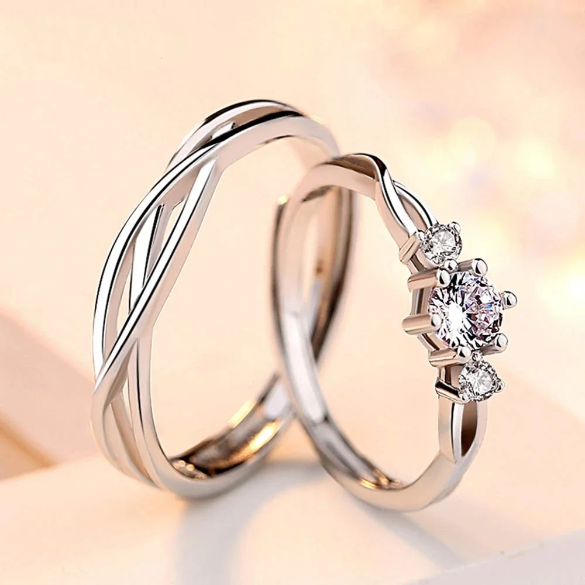
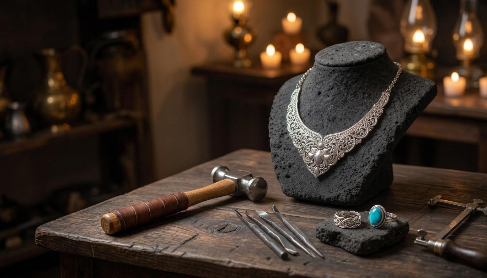
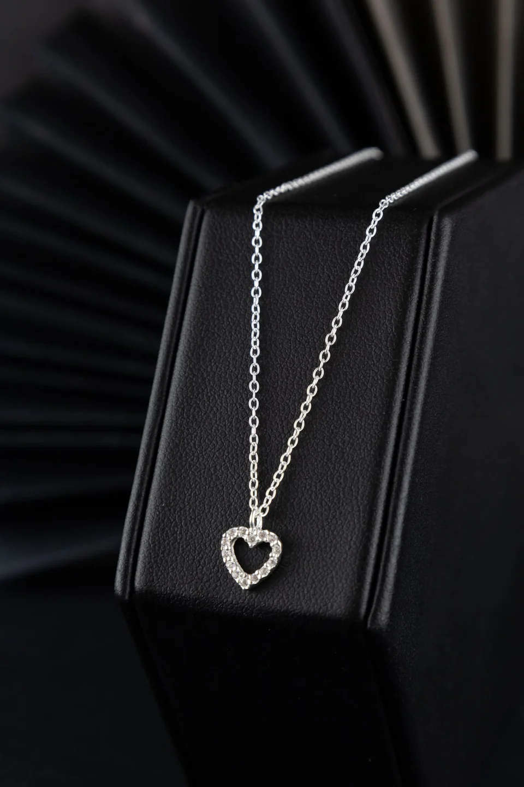
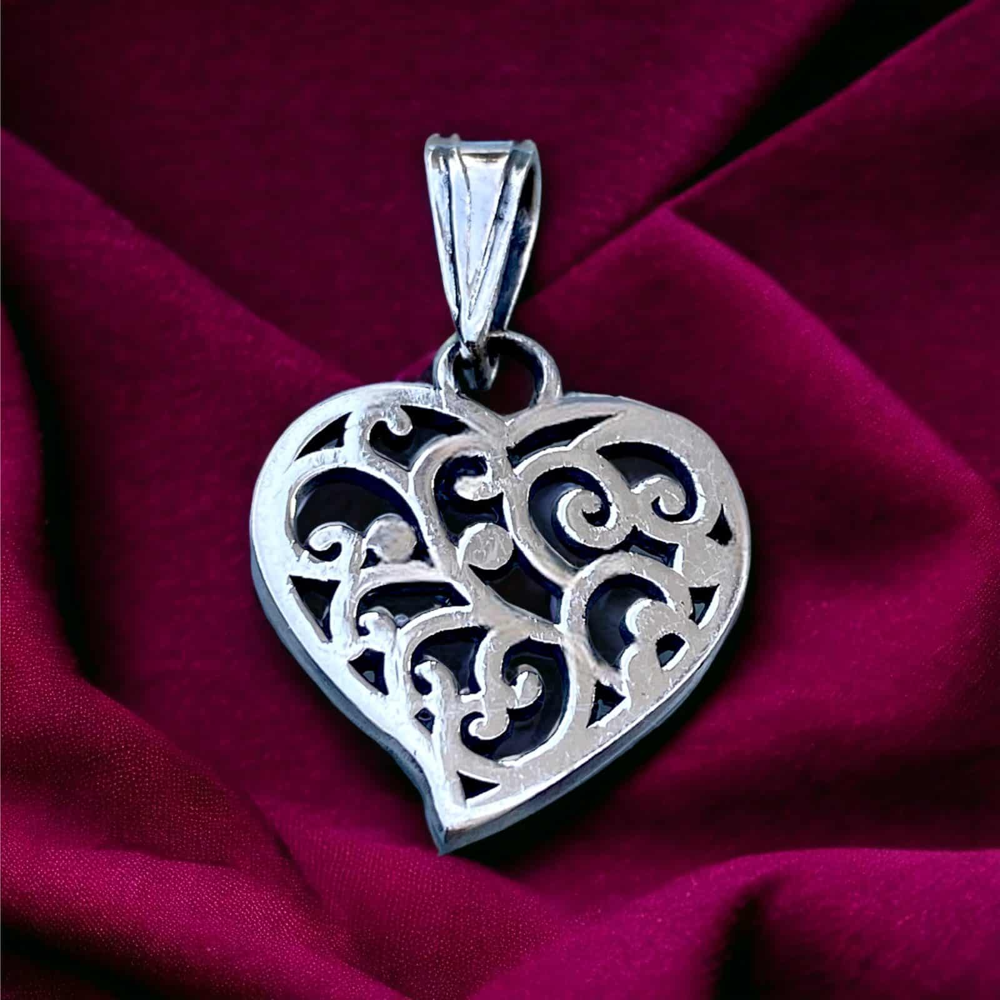
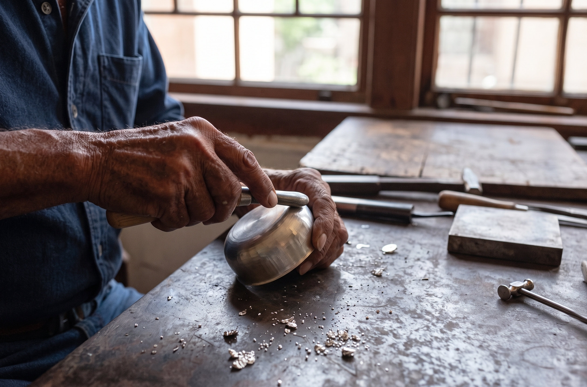

Taxco de Alarcón, Guerrero
Catálogo de anillos, collares, pulseras, aretes, brazaletes, arracadas, dijes y accesorios en plata .925 y oro 10k. Elige tu pieza y escríbenos: cada pedido se confirma directo con el taller.
Catálogo Virtual
villa de torres




El taller
Fundimos, laminamos y calamos aquí mismo, a unas calles de Santa Prisca. Trabajamos plata ley .925 y oro de 10k y 18k, con piedras de la región como turquesa, obsidiana y ópalo.
Desde 1968
Taller familiar
Plata .925
Ley garantizada
Oro 10k · 18k
Bajo pedido
Diseño a medida
Grabado y tallas
Cómo pedir
Elige tu pieza
Guarda el código del producto (por ejemplo AN-104).
Escríbenos
Por WhatsApp, teléfono o correo. Te confirmamos precio del día, talla y disponibilidad.
Recibe o recoge
Envíos a toda la República por paquetería asegurada, o pasa por la tienda en el centro de Taxco.
Visítanos